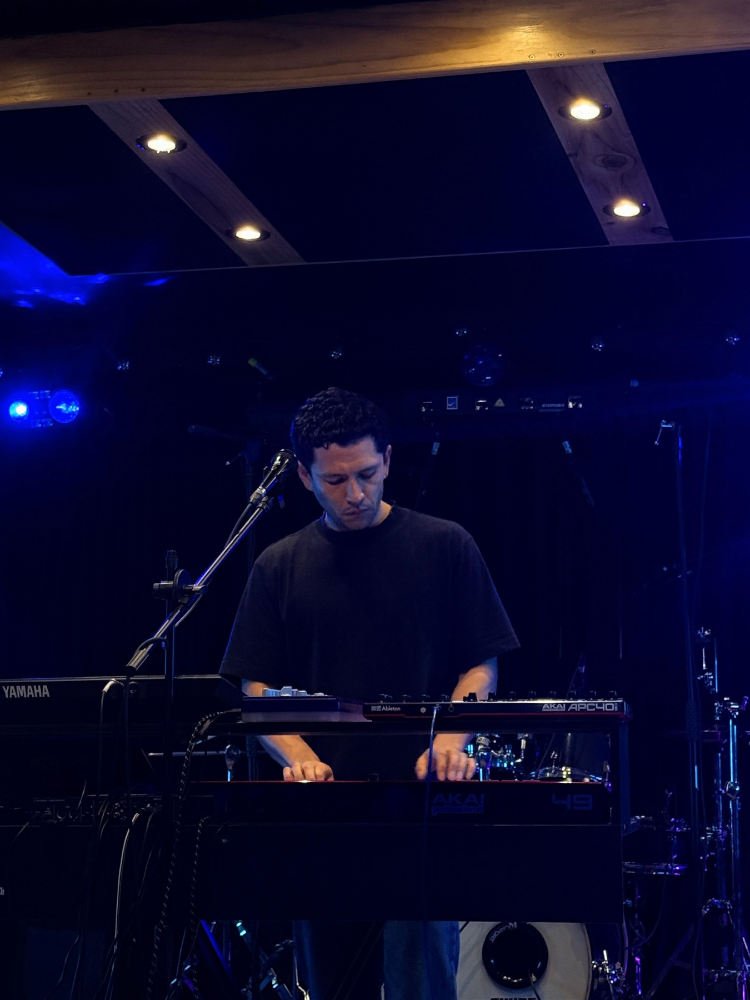

06 Identidad visual
Ácido sobre negro
Underground, Berlín, artístico. Una base negra y hueso, un protagonista, el verde ácido, y su complementario, el violeta UV, como sombra. Todo lo demás son tonos de esa misma familia, de lo profundo (musgo) a la luz (ácido). Pocos colores, usados con disciplina, es lo que hace que una marca se vea única y no decorada.
El logo se queda
El búho funciona: ve en la oscuridad, escucha, observa. Encaja perfecto con un álbum sobre mirarse hacia adentro. Las espirales de los ojos ya parecen discos y ondas.
Las letras de puntos son lo más actual y ya viven en el escenario (en tus equipos, en el EPK). Recuerdan una pantalla LED: electrónica pura. Y con El Andar ganan un sentido nuevo: cada punto es un paso del camino.
- Logo oficial: búho + "DA GET UP" en letras de puntos.
- Tamaños pequeños (avatar de IG, Spotify, favicon, sticker): solo el búho. Los puntos se pierden por debajo de ~120 px de ancho.
- Las letras de puntos son solo para el nombre. Títulos y textos van en Archivo condensada e Inter, para que se lean bien.
- Versiones: hueso sobre noche (principal), noche sobre hueso, solo búho.
- Retirar la versión vieja con letra condensada para no tener dos logos.
- Pendiente: vectorizar y limpiar desde el .ai y entregarlo como kit.
Paleta
Hueso#EDE6DA · texto, logo
Ceniza#8A857D · secundario
Ácido#D4FF00 · protagonista
Lima#B6E000 · hover, secundario
Oliva#7A9E00 · gráficos, apoyo
Profundo#3D5200 · fondos de acento
Musgo#1C2400 · bajo la superficie
UV#7B2CFF · complementario, sombra
Noche UV#1A0B33 · fondos, degradados
Violeta UV: el complementario
Es el opuesto exacto del ácido en el círculo cromático y la pareja clásica del acid house y la luz negra de club. Además ya vive en tus fotos: las luces de tus shows son violeta y azul. El ácido es la voz, el UV es la sombra.
Reglas del UV
- Máximo 5% de cualquier pieza.
- Para fondos de noche, degradados, brillos y visuales en vivo.
- Nunca texto violeta sobre ácido ni ácido sobre violeta: vibra y no se lee.
- Nunca un tercer color fuerte. Dos acentos se ve de autor; tres, de fiesta.
60% noche
25% hueso
10% ácido
Proporción de uso. El ácido es poco pero siempre presente: un titular, un botón, una franja. Si todo es verde, nada destaca. Los tonos oscuros de la familia (profundo, musgo) dan atmósfera sin romper el negro, y el UV aparece solo como sombra o brillo (el 5% final).
Tipografía
El Andar
Archivo Condensed para títulos: fuerte, cercana al logo.
ARCHIVO · WDTH 62 · 700–800
Canciones que se bailan y se sienten.
Inter para textos largos, bios y captions.
INTER · 400–600 · JETBRAINS MONO PARA DATOS Y CRÉDITOS
Fotografía: en vivo, siempre
La imagen oficial de Da Get Up es el artista tocando: voz en el micrófono, manos en los equipos, público y visuales alrededor. Nada de retratos posados con gafas. Eso es lo que te diferencia de un DJ y lo que un booker quiere ver.



Escenario
Plano abierto con público y visuales: muestra la escala del show. Para EPK, flyers y prensa.
Interpretación
Plano medio cantando o tocando: la voz y las manos. Para portadas, perfil y avatar.
Luz de escenario
Fondos oscuros con la luz real del show (azul, verde, ámbar). Se respeta el color, sin filtros saturados.
Duotono ácido
El sello gráfico de la marca: la foto pasa a blanco y negro con contraste alto y se imprime sobre verde ácido. Es la estética que ya funcionó en Medellín Takeover y en tus posts, y vuelve cualquier foto reconocible como Da Get Up.
- Duotono: retratos, bio, portadas de reels y carruseles, flyers, piezas tipográficas.
- Color real: galería de shows y hero, donde la luz del escenario cuenta la historia.
- Funciona con fotos bien iluminadas. Las fotos muy oscuras se ven negras: se aclaran antes.
- En web:
grayscale(1) brightness(1.9) contrast(1.45) en modo multiply sobre #D4FF00.
Dejar atrás
Los retratos viejos con gafas, los fondos psicodélicos de ojo morado/neón y los filtros saturados del EPK actual. Pertenecen a otra etapa. En vivo los visuales pueden ser libres, pero el material oficial sigue esta guía.